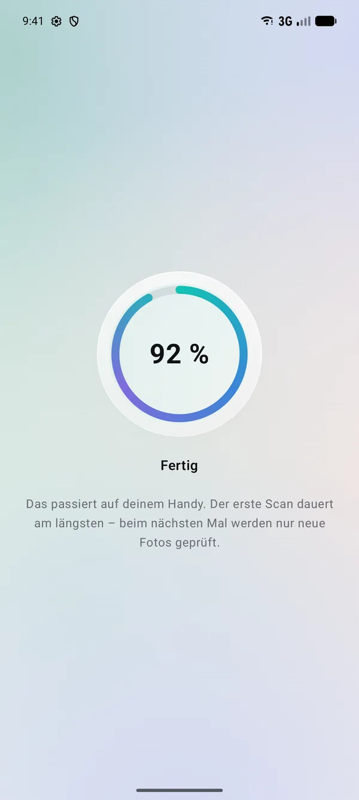
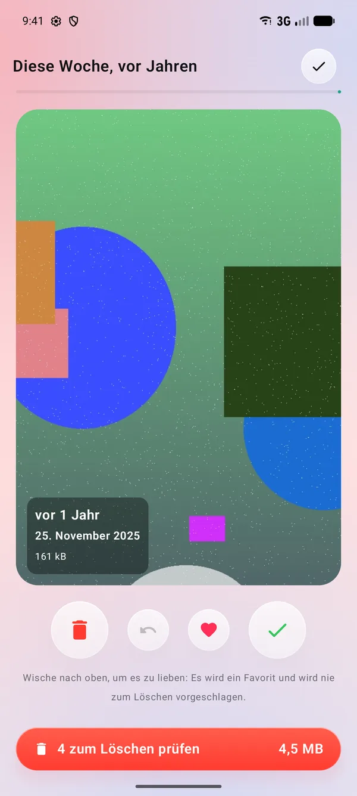
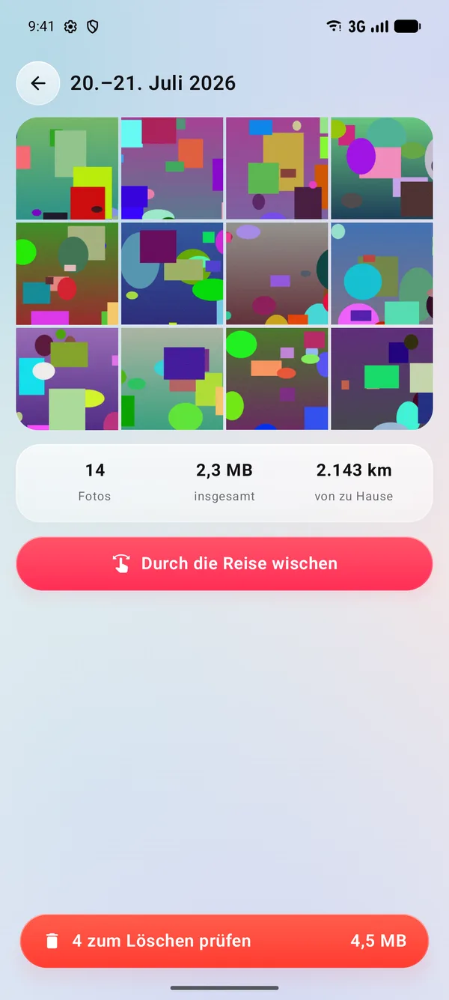
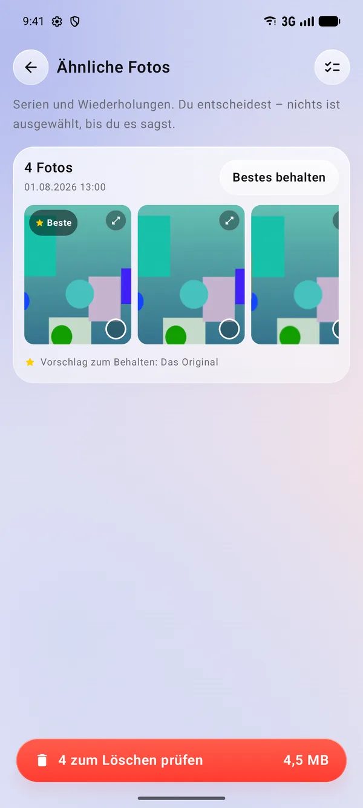
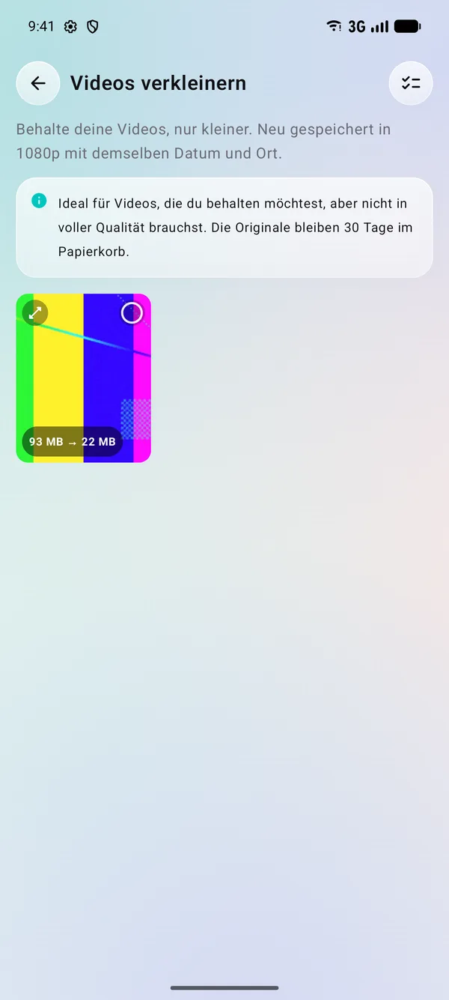
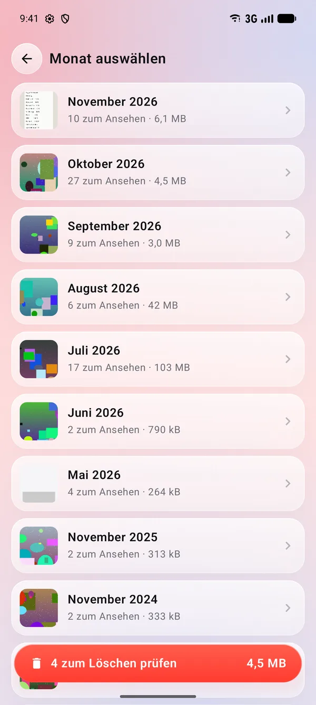
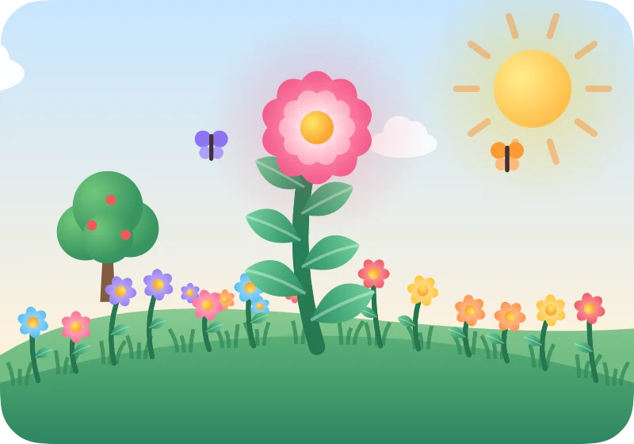

Eine ruhigere
Fotomediathek
Lumtidy findet Duplikate, Wiederholungen und speicherhungrige Videos auf deinem Android-Handy — und du entscheidest. Nichts wird hochgeladen. Nichts wird dir aufgedrängt.
▶ Bald bei Google PlayFür Android 7 und neuer · Deutsch, English, Norsk · Mit iPhone?






Erinnern statt nur löschen
Aufräumen ist ein guter Anlass zurückzublicken. Lumtidy macht es weniger zur lästigen Pflicht.

Wiederentdecken
Fotos aus dieser Woche in früheren Jahren. Behalte die besten, lass den Rest los — nach oben wischen, und das Foto landet im Album „Wiederentdeckt“.
Deine Reisen
Lumtidy erkennt Reisen anhand der Aufnahmeorte — auf deinem Handy, nie online nachgeschlagen —, damit du einen ganzen Urlaub auf einmal aufräumst.
Dein Garten
Er wächst mit jedem Aufräumen, mit einer neuen Blume für jeden Monat, in dem du dranbleibst. Bleib dabei, dann kommen Sonne, Schmetterlinge und ein Regenbogen.
Widget für den Startbildschirm
Dein Garten und wie viel Platz frei werden kann, auf einen Blick.
Finde Platz, von dem du nichts wusstest
Strenge Duplikatprüfung, smarte Bildschirmfotos und Werkzeuge, mit denen du behältst, was du liebst — nur kleiner.
Exakte Duplikate
Eine Prüfung auf Pixelebene, damit „Duplikat“ wirklich identisch heißt. Die beste Kopie bleibt immer erhalten.
Ähnliche Fotos
Serien und Wiederholungen gruppiert, das schärfste wird vorgeschlagen. Du wählst.
Videos verkleinern
Behalte deine Videos in scharfem 1080p, oft auf ein Drittel verkleinert. Datum und Ort bleiben.
Riesige Fotos
Aufnahmen mit 50–200 MP können 20–60 MB groß sein. Behalte sie stattdessen als scharfe 24-MP-Fotos.
Bewegte Fotos zu Standbildern
Behalte das Foto, entferne den kleinen Clip, den du nie ansiehst.
Smarte Bildschirmfotos
Tickets, QR-Codes und neue Bildschirmfotos bleiben unberührt. Der Rest ist schnell weg.
Aus Chats gespeichert
Memes und Weitergeleitetes aus WhatsApp, Messenger, Telegram und Snapchat an einem Ort.
Einen Monat wischen
Blättere durch einen Monat — behalten oder löschen mit einem Wisch. Rückgängig mit einem Tipp.
Nichts ist endgültig
Ab Android 11 landet Gelöschtes 30 Tage im Papierkorb. Lumtidy zeigt dir, wann der Platz wirklich frei ist.
Einfache, ehrliche Preise
Nutze die kostenlosen Funktionen, so lange du willst. Upgrade nur, wenn Lumtidy es dir wert ist.